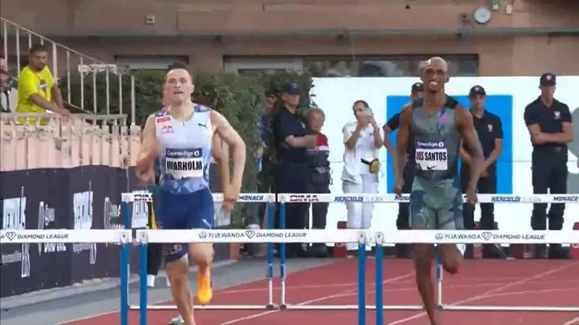

Alison dos Santos faz índice olímpico, e é prata na volta aos 400m com barreiras
Brasileiro, que se recupera de cirurgia realizada em fevereiro, tem pequeno desequilíbrio na reta final da prova e perde chance de brigar pelo ouro na Diamond League
Depois da cirurgia do joelho realizada em fevereiro, Alison dos Santos voltou a disputar sua principal prova nesta sexta-feira. Na etapa de Mônaco da Diamond League, o brasileiro ficou em segundo lugar nos 400m com barreiras, com 47s66. O campeão foi o norueguês Karsten Warholm, que fez o melhor tempo do ano, com 46s51. O tempo garante a presença de Piu também nessa prova nas Olimpíadas de Paris. É o segundo índice olímpico feito pelo brasileiro (ele já tem tempo nos 400m rasos).
Karsten liderou a prova de ponta a ponta. Alisson ficou muito próximo durante quase todo o percurso. Havia a expectativa de uma possível arrancada no final para brigar pelo ouro. Mas na saída da nona barreira Piu teve um leve desequilíbrio. O tempo perdido foi pouco, mas suficiente para não ter mais chance de buscar o primeiro lugar. Com expressão de dor, o brasileiro conseguiu sustentar a segunda posição nos últimos metros.
Essa foi a segunda prova de Alison desde a cirurgia. Na semana passada, ele disputou os 400m rasos na etapa de Silesia. Mesmo não sendo sua principal prova, conseguiu subir ao pódio com o terceiro lugar conquistado.
